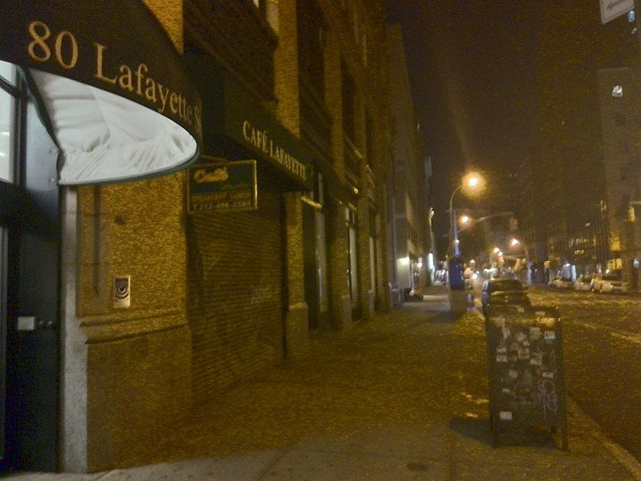

Waking up to a different skyline
NYU Shanghai students studying abroad in New York City have much to adjust to
(2016. oct 18.)
From semester to semester, dozens of students from NYU Shanghai, NYU’s degree-granting location in China come to New York to study abroad on the home campus of the school. Replacing the Bottle Opener with the Empire State Building, NYU Shanghai’s small library with Bobst, and the Asian sight’s tight, familiar student body with thousands of strangers in the Big Apple, the change is certainly drastic and can be hard to swallow, even for US nationals who already have a footing in the country.
As of 2016’s fall semester, around fifty students from the Chinese campus pursue their studies in NYC, taking advantage of NYU’s Global Program. For Shanghai students, spending at least one semester at another global site is mandatory. For most of them, studying away starts at the fall semester of junior year, thus for the majority of the NYUSH students in NYC right now, this is their first time leaving the home campus. Even though half of NYUSH’s student body went to Shanghai from different parts of the world, now getting used to New York’s unique microcosmos is a whole new task to face.
“One of the dangers people coming here face is that they might end up isolated and alone” Thomas Sirinides, NYU’s Associate Director of International Student Services said “Or you can find a few people who are like you and end up isolated in a small circle.”
Mr Sirinides has worked with many international students in the past, and thinks to make the best of the adjustments, students should actively seek out participating in communities thats’ projects they are interested in. It is certainly easier for US nationals, who have the opportunity to take internships, but there are options for internationals too in the forms of volunteering opportunities, student clubs and sports teams.
“I think it's definitely more difficult to get close to people here and this fact forces you to be more independent.” Sonia Alvarez, junior at NYUSH said “But I've never fit in with a rhythm of a city, with the people, as much as I have here.”
While Ms Alvarez, a US citizen finds it easy to open up to New York City, it is certainly possible for internationals and American alike to end up cut off from the wider student body.
Most of the people I hang out with are NYUSH students” Mira Malmosi from Hungary said ”I haven’t made a lot of new friends since I got here.”
Bridges’ transition model states that each transition has three recurring phases. First, upon arriving at a new place, one has fun during what is called the “honeymoon phase,” followed by the much more unpleasant “fight phase” that commences as the culture shock strikes. The third one is called the “acceptance phase,” when one learns to fit in with the new environment and finds their place. To o through these stages is inevitable, but with a focus on one’s own interests and being aware of all the opportunities that this rich new environment provides can make the process much easier.
 Go Back
Go Back